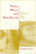

Browse
other Titles:
A B C
D E F
G H I
J K L
M N O
P Q R
S T U
V W X
Y Z |
|
Facing
The Death Penalty
Essays on a Cruel and Unusual Punishment
edited
by Radelet, Michael L., foreword by Henry Schwarzschild
264 pp • Spring 1989
paper 978-0-87722-721-2
cloth 978-0-87722-611-6 |
 |
Faith,
Reason, and Skepticism
edited
by Hester, Marcus
192 pp • Fall 1991
paper 978-0-87722-853-0 |
 |
Families
and Work
edited
by Gerstel, Naomi and Harriet Engel Gross
576 pp • Spring 1987
paper 978-0-87722-469-3
cloth 978-0-87722-467-9 |
|
Families
in the U.S.
Kinship and Domestic Politics
edited
by Hansen, Karen V. and Anita Ilta Garey
944 pp • 7x10 • Spring 1998
paper 978-1-56639-590-8
cloth 978-1-56639-589-2
|
 |
Family
and Gender Among American Muslims
Issues Facing Middle Eastern Immigrants And Their Decendants
edited
by Aswad, Barbara C. and Barbara Bilgé
344 pp • 6x9 • Spring 1996
paper 978-1-56639-443-7
cloth 978-1-56639-442-0
|
|
Family and Work in Everyday Ethnography
edited by Brown, Tamara Mose and Joanna Dreby
228 pp • 5.5x8.25 • Fall 2013
paper 978-1-4399-1076-4
cloth 978-1-4399-1075-7 |
 |
Family
Ties
Enduring Relations between Parents and Their Grown Children
Logan,
John R. and Glenna D. Spitze
304 pp • 6x9 • Fall 1996
paper 978-1-56639-472-7
cloth 978-1-56639-471-0 |
|
Farm
Workers, Agribusiness, and the State
Majka,
Linda C. and Theo J. Majka
320 pp • Spring 1982
paper 978-0-87722-256-9 |
|  |
Farms,
Mines, and Main Streets
Uneven Development in a Dakota County
Tauxe,
Caroline S.
288 pp • 6x9 • Fall 1993
paper 978-1-56639-070-5 |
 |
The
Fashioned Self
Finkelstein,
Joanne
212 pp • Spring 1991
paper 978-0-87722-850-9 |
 |
Fashioning Diaspora
Beauty, Femininity, and South Asian American Culture
Reddy, Vanita
280 pp • 6x9 • Spring 2016
paper 978-1-4399-1155-6
cloth 978-1-4399-1154-9
|
 |
Fast
Lives
Women Who Use Crack Cocaine
Sterk,
Claire E.
256 pp • 5.5x8.25 • Spring 1999
paper 978-1-56639-672-1
cloth 978-1-56639-671-4
|
 |
Fast
Wheels, Slow Traffic
Wright,
Charles L.
304 pp • 6x9 • Spring 1992
paper 978-0-87722-911-7 |
 |
Feedback
The Video Data Bank Catalog of Video Art and Artist Interviews
edited
by Horsfield, Kate and Lucas Hilderbrand 360
pp • 8.5x11 • Fall 2005
cloth 978-1-59213-182-2
|
|
The
Feel of Silence
Tucker,
Bonnie Poitras, foreword by Frederic Hafferty
232 pp • 6x9 • Fall 1995
paper 978-1-56639-352-2
cloth 978-1-56639-351-5
|
 |
Fela
The Life and Times of an African Musical Icon
Veal,
Michael E.
352 pp • 7x10 • Spring 2000
paper 978-1-56639-765-0
cloth 978-1-56639-764-3
|

|
Feminism and Affect at the Scene of Argument
Beyond the Trope of the Angry Feminist
Tomlinson, Barbara
288 pp • 6x9 • Spring 2010
paper 978-1-4399-0247-9
cloth 978-1-4399-0246-2
|
 |
Feminism
and Community
edited
by Weiss, Penny A. and Marilyn Friedman
432 pp • 6x9 • Spring 1995
paper 978-1-56639-277-8
cloth 978-1-56639-276-1 |
|
Feminism
and Criminology
Naffine,
Ngaire
256 pp • 6x9 • Fall 1996
paper 978-1-56639-508-3
cloth 978-1-56639-507-6 |
|
The
Feminist Case Against Bureaucracy
Ferguson,
Kathy E.
304 pp • Fall 1984
paper 978-0-87722-400-6
cloth 978-0-87722-357-3 |
 |
Feminist
Generations
The Persistence of the Radical Women's Movement
Whittier,
Nancy
320 pp • 5.5x8.25 • Spring 1995
paper 978-1-56639-282-2
cloth 978-1-56639-281-5 |
 |
Feminist
Legal Theory
Foundations
edited
by Weisberg, D. Kelly
640 pp • 7x10 • Spring 1993
paper 978-1-56639-029-3
cloth 978-1-56639-028-6
|
 |
Feminist
Organizations
Harvest of the New Women’s Movement
edited
by Ferree, Myra Marx and Patricia Yancey Martin
488 pp • 6x9 • Fall 1994
paper 978-1-56639-229-7
cloth 978-1-56639-228-0
|
|
The
Fibromyalgia Story
Medical Authority and Women's Worlds of Pain
Barker,
Kristin K.
264 pp • 6x9 • Spring 2005
paper 978-1-59213-161-7
cloth 978-1-59213-160-0
|
 |
Fighting
Back in Appalachia
Traditions of Resistance and Change
edited
by Fisher, Stephen L.
400 pp • 6x9 • Fall 1992
paper 978-0-87722-977-3
cloth 978-0-87722-976-6 |
 |
Filipino
American Lives
Espiritu,
Yen Le
240 pp • 6x9 • Spring 1995
paper 978-1-56639-317-1
cloth 978-1-56639-316-4
|

|
Filling the Ark
Animal Welfare in Disasters
Irvine, Leslie
176 pp • 5.5x8.25 • Spring 2009
cloth 978-1-59213-1829-0
|
 |
Final
Negotiations
A Story of Love, and Chronic Illness
Ellis,
Carolyn
368 pp • 6x9 • Fall 1994
paper 978-1-56639-271-6
cloth 978-1-56639-270-9
|
 |
Financialization
of Daily Life
Martin,
Randy
240 pp • 5.5x8.25 • Fall 2002
paper 978-1-56639-988-3
cloth 978-1-56639-987-6
|
 |
A
Fine Romance
Five Ages of Film Feminism
Mellencamp,
Patricia
344 pp • 6x9 • Fall 1995
paper 978-1-56639-401-7
cloth 978-1-56639-400-0
|
 |
Fire
on the Earth
Anselm Kiefer and the Postmodern World
Gilmour,
John C.
272 pp • Spring 1990
paper 978-0-87722-962-9
cloth 978-0-87722-690-1
|
 |
Fire on the Prairie
Harold Washington, Chicago Politics, and the Roots of the Obama Presidency
Rivlin, Gary
312 pp • 6x9 • Fall 2012
paper 978-1-4399-0492-3
cloth 978-1-4399-0491-6
|
 |
Fireweed
A Political Autobiography
Lerner,
Gerda
408 pp • 7x10 • Spring 2002
paper 978-1-59213-236-2
cloth 978-1-56639-889-3
|
|
The
First Suburban Chinatown
The Remaking of Monterey Park, California
Fong,
Timothy P.
240 pp • 6x9 • Fall 1993
paper 978-1-56639-262-4
cloth 978-1-56639-123-8
|
 |
Fishers
at Work, Workers at Sea
A Puerto Rican Journey through Labor and Refuge
Griffith,
David and Manuel Valdés Pizzini
280 pp • 6x9 • Fall 2001
paper 978-1-56639-911-1
cloth 978-1-56639-910-4
|
 |
Fishing
the Delaware Valley
Ingram,
Jr., George H., Robert F. Marler, Jr. and Robert R. Smith, foreword
by Joe Humphreys
256 pp • 6x9 • Fall 1997
paper 978-1-56639-665-3
cloth 978-1-56639-588-5
|
 |
Fishy
Business
Salmon, Biology, and the Social Construction of Nature
Scarce,
Rik
272 pp • 6x9 • Fall 1999
paper 978-1-56639-729-2
cloth 978-1-56639-728-5
|

|
Flow
The Life and Times of Philadelphia's Schuylkill River
Kephart, Beth
120 pp • 5.5x8.25 • Spring 2007
paper 978-1-59213-637-7
cloth 978-1-59213-636-0 |
 |
Food
and Evolution
Toward a Theory of Human Food Habits
edited
by Harris, Marvin and Eric B. Ross
640 pp • Spring 1987
paper 978-0-87722-668-0
cloth 978-0-87722-435-8 |
 |
For
an Audience
Thom,
Paul
256 pp • 6x9 • Fall 1992
paper 978-0-87722-991-9 |

|
For Both Cross and Flag
Catholic Action, Anti-Catholicism, and National Security Politics in World War II San Francisco
Issel, William
216 pp • 5.5x8.25 • Fall 2009
cloth 978-1-4399-0028-4
|
 |
For
Fun and Profit
The Transformation of Leisure into Consumption
edited
by Butsch, Richard
288 pp • Spring 1990
paper 978-0-87722-740-3
cloth 978-0-87722-676-5 |
 |
For
People and the Planet
Holism and Humanism in Environmental Ethics
Marietta,
Jr., Don E., foreword by Holmes Rolston III
256 pp • 5.5x8.25 • Fall 1994
paper 978-1-56639-247-1
cloth 978-1-56639-246-4
|
|
The
Forest and the Trees
Sociology as Life, Practice, and Promise
Johnson,
Allan G.
Revised and Expanded Edition
216 pp • 5.5x8.25 • Spring 2008
paper 978-1-59213-876-0
cloth 978-1-59213-875-3
|
 |
The
Forest and the Trees
Sociology as Life, Practice, and Promise
Third Edition
Johnson,
Allan G.
198 pp • 6x9 • Fall 2014
paper 978-1-43991-187-7
cloth 978-1-43991-186-0 |
 |
The Forgotten Bottom Remembered
Stories from a Philadelphia Neighborhood
edited by Tarrier, August
202 pp • 6x9 • Spring 2012
paper 978-0-97129-964-1 |
|
Forgotten
Conquests
Rereading New World History from the Margins
Verdesio,
Gustavo
216 pp • 7x10 • Fall 2000
paper 978-1-56639-834-3
cloth 978-1-56639-83-6 |
 |
The
Forgotten Network
DuMont and the Birth of American Television
Weinstein,
David 240 pp • 6x9 • Spring 2004
paper 978-1-59213-499-1
cloth 978-1-59213-245-4
|

|
Forgotten Philadelphia
Lost Architecture of the Quaker City
Keels, Thomas H.
320 pp • 10x8 • Fall 2007
cloth 978-1-59213-506-6
|

|
Forklore
Recipes and Tales from an American Bistro
Yin, Ellen
288 pp • 8x9 • Fall 2007
cloth 978-1-59123-651-3
|
 |
Forms
in the Abyss
A Philosophical Bridge between Sartre and Derrida
Martinot,
Steve
320 pp • 6x9 • Spring 2006
paper 978-1-59213-440-3
cloth 978-1-59213-439-7
|
 |
The
Forms of Power
From Domination to Transformation
Wartenberg,
Thomas E.
320 pp • Fall 1989
paper 978-0-87722-905-6
cloth 978-0-87722-648-2 |
 |
Four Germanys
A Chronicle of the Schorcht Family
Pitkin, Donald S.
Foreword by John C. Torpey
316 pp • 6x9 • Fall 2016
paper 978-1-4399-1343-7
cloth 978-1-4399-1342-0 |
 |
The
Fragile Bridge
Paterson Silk Strike, 1913
Golin,
Steve
328 pp • 6x9 • Spring 1988
paper 978-1-56639-005-7
cloth 978-0-87722-534-8 |
 |
Framing
Blackness
The African American Image in Film
Guerrero,
Ed
272 pp • 6x9 • Fall 1993
paper 978-1-56639-126-9
cloth 978-1-56639-125-2 |

|
Framing the Audience
Art and the Politics of Culture in the United States, 1929-1945
Helfgott, Isadora Anderson
326 pp • 6x9 • Fall 2015
paper 978-1-4399-1178-5
cloth 978-1-4399-1177-8 |
 |
Frank
Capra
Authorship and the Studio System
edited
by Sklar, Robert and Vito Zagarrio
304 pp • 5.5x8.25 • Spring 1998
paper 978-1-56639-608-0
cloth 978-1-56639-607-3
|
|
Frankie Manning
Ambassador of Lindy Hop
Manning, Frankie and Millman, Cynthia R.
312 pp • 6x9 • Spring 2007
paper 978-1-59213-564-6
cloth 978-1-59213-563-9 |
 |
Fred
Allen's Radio Comedy
Havig,
Alan
296 pp • Fall 1990
paper 978-0-87722-810-3
cloth 978-0-87722-713-7 |
 |
Free Time
The Forgotten American Dream
Hunnicutt, Benjamin Kline
250 pp • 6x9 • Spring 2013
paper 978-1-4399-0715-3
cloth 978-1-4399-0714-6 |
 |
Free
Trade and Uneven Development
The North American Apparel Industry after NAFTA
edited
by Gereffi, Gary, David Spener and Jennifer Bair
368 pp • 7x10 • Fall 2002
paper 978-1-56639-968-5
cloth 978-1-56639-967-8
|
 |
Free
Trade?
Informal Economies at the U.S.-Mexico Border
Staudt,
Kathleen
256 pp • 5.5x8.25 • Fall 1997
paper 978-1-56639-568-7
cloth 978-1-56639-567-0
|
 |
Free
Women
Ethics and Aesthetics in Twentieth-Century Women's Fiction
Fullbrook,
Kate
192 pp • Fall 1990
paper 978-0-87722-774-8
cloth 978-0-87722-773-1 |
 |
Freedom
at Risk
Secrecy, Censorship, and Repression in the 1980s
edited
by Curry, Richard O.
448 pp • Fall 1988
paper 978-0-87722-660-4
cloth 978-0-87722-543-0 |
|
Freedom
Without Responsibility
Waller,
Bruce N.
256 pp • Fall 1990
paper 978-0-87722-717-5 |
 |
Friends
and Neighbors
Group Life in America's First Plural Society
edited
by Zuckermann, Michael
270 pp • Spring 1982
paper 978-0-87722-253-8 |
 |
From
Black Power to Hip Hop
Racism, Nationalism, and Feminism
Collins,
Patricia Hill 256 pp • 6x9 • Fall
2005
paper 978-1-59213-092-4
cloth 978-1-59213-091-7
|
|
From
Good Will to Civil Rights
Transforming Federal Disability Policy
Scotch,
Richard K.
232 pp • 5.5x8.25 • Spring 2001
paper 978-1-56639-897-8
cloth 978-1-56639-896-1
|

|
From
Identity to Politics
The Lesbian and Gay Movements in the United States
Rimmerman,
Craig A.
256 pp • 6x9 • Fall 2001
paper 978-1-56639-905-0
cloth 978-1-56639-904-3
|
|
From
Mammies to Militants
Domestics in Black American Literature
Harris,
Trudier
248 pp • Fall 1982
paper 978-0-87722-279-8 |

|
From
Margin to Mainstream
American Women and Politics Since 1960
Hartman,
Susan M.
216 pp • Spring 1989
paper 978-0-87722-634-5 |
 |
From
Plant to Politics
The Autoworkers Union in Postwar Canada
Yates,
Charlotte A. B.
320 pp • 6x9 • Spring 1993
paper 978-1-56639-043-9 |
 |
From
Puerto Rico to Philadelphia
Puerto Rican Workers and Postwar Economies
Whalen,
Carmen Teresa
328 pp • 7x10 • Fall 2000
paper 978-1-56639-836-7
cloth 978-1-56639-835-0
|
 |
From
Redlining to Reinvestment
edited
by Squires, Gregory D.
288 pp • 6x9 • Fall 1992
paper 978-0-87722-985-8
cloth 978-0-87722-984-1 |

|
From Slave Ship to Supermax
Mass Incarceration, Prisoner Abuse, and the New Neo-Slave Novel
Alexander, Patrick Elliot
266 pp • 6x9 • Fall 2017
paper 978-1-4399-1415-1
cloth 978-1-4399-1414-4 |
|
From
Tian'anmen to Times Square
Transnational China and the Chinese Diaspora on Global Screens,
1989-1997
Marchetti,
Gina
320 pp • 6x9 • Fall 2005
paper 978-1-59213-278-2
cloth 978-1-59213-277-5 |

|
From Warism to Pacifism
A Moral Continuum
Second Edition
Cady, Duane L.
170 pp • 5.5x8.25 • Fall 2010
paper 978-1-4399-0312-4
cloth 978-1-4399-0311-7
|

|
Frontiers
of Illusion
Science, Technology, and the Politics of Progress
Sarewitz,
Daniel
256 pp • 6x9 • Spring 1996
paper 978-1-56639-416-1
cloth 978-1-56639-415-4
|

|
The
Future of American Democracy
Views from the Left
edited
by Kann, Mark E.
320 pp • Spring 1983
paper 978-0-87722-289-7
cloth 978-0-87722-288-0 |